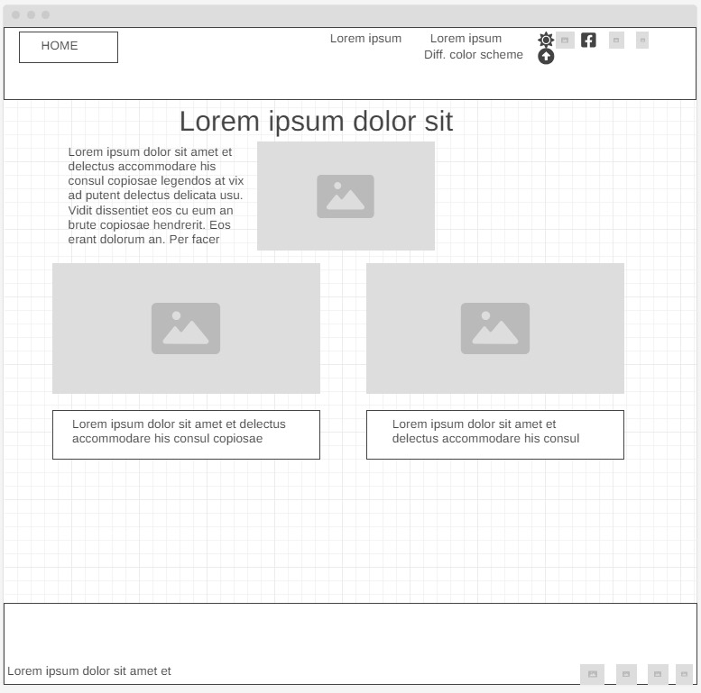
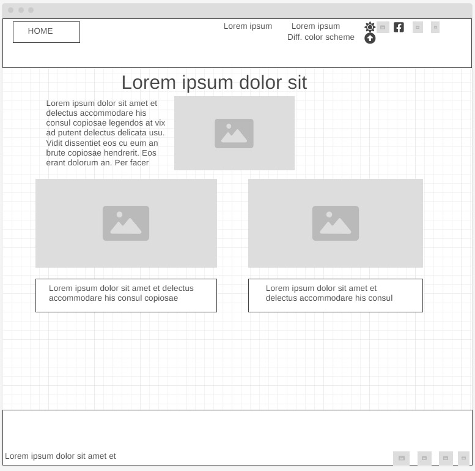

Overview
Purpose
I am here to help solve your problems. Whether you need coding for database management or graphic design and webdevelopment, I bring a myriad of experience with different jobs and projects. If you need to contact me or hire, please reach out to me through my email!
Audience
Potential Employers: I am looking for any future coworkers or employers who check social media to find this website and to find my projects. I hope to use this website to gain real employment in the future. I know that many people check out social media before hiring someone. I would include this link in my LinkedIn to show I can actually code!
Actual Content of the website
All of the content is located within the wireframes as well: || Welcome to the Site! || Hi there! My name is Jarom Bradshaw, a CS major student at BYU-I || On my portfolio website, I will be sharing my principles on coding, relevant experience, and projects I have included. I will also include some blog posts. Join me on my road to achievement as a software developer! || link: Resume in HTML and CSS for printing || link: Other Homepage in different CSS || Jarom Bradshaw || CONTACT: || 859-420-4178 || jarombrads@gmail.com || linkedin.com/in/jarombradshaw || Rexburg, Idaho || I am a computer engineer student at Brigham Young University - Idaho, I bring a unique blend of effective communication, technological proficiency, and leadership skills. With a diverse background including a two-year voluntary mission in Rio de Janeiro and varied work experiences, I have honed my ability to navigate diverse environments and communicate across sensitive topics. Serving as the Technology Secretary in the Mission Office, h have worked with vendors made largescale ourchases, negotiated several partnerships with outsourcin repairs and fixing problems quickly.I successfully managed social media, newsletters, and IT support for over 120 missionaries, showcasing strategic leadership and analytical expertise. || Computer Languages: Python, HTML, CSS || Writing & Communication: News Writing, Theater, Public Speaking, Outsourcing || Software-skills: e-money, Nitrogen, Salesforce, Tableau, mySQL || Time Management, Sales, Marketing (Entrepeneur), 60wpm typing, Analytical Skills, Working With Vendors, Communicating about Sensitive Topics || Work Experience || Visiting Angels || Caretaker || May 202 - Aug 2021(different font) || Versailles, Kentucky, United States || Provided caretaking services || Versailles Recreation Center || Lifeguard || Dec 2018 - Jan 2020 || Managed the aquatic center and displaying appropriate first-aid and lifesaving skill techniques || Languages: || English Professional Level || Português High-school Level Fluency || ASL: Novice || EDUCATION || Student in Computer Science || Brigham Young University - Idaho || Sept 2023 - Sept 2027 || I am a student studying computer science in school. || Relevant Work Experience || Voluntary Full Time Representative || Church of Jesus Christ of Latter Day Saints || Aug 2021 - Aug 2023 || Rio de Janeiro, Rio de Janeiro, Brazil || (bullet points) Demonstrated effective communication in Portuguese Served as Technology Secretary in the Mission Office - Managed social media, newsletters, and IT support for 120+ missionaries called hundreds of people who wannted to talk to the missionaries to help them get the first contact quickly when requested. Switched technological devices for better models, maintaining a tight budget and negotiating partnerships with tech-repair businesses || Expertise || Diverse Work Experience and Adaptability ----- Acquired a range of skills through lifeguarding, construction, and caretaking roles, demonstrating adaptability and versatility. Managed a temporary home employment venture involving lawn care services, and manual labor, showcasing a strong work ethic. Strategic Team Leadership --- Conducted impactful training sessions addressing real issues during the voluntary mission, contributing to continuous improvements in missionary work. Guided and trained a new technology secretary, enhancing overall efficiency. Analytical Expertise --- Provided statistical reports to solve problems || ACHIEVMENTS: || Honor High School Graduate || Referrals available upon request
Branding
Website Logo
Style Guide
Color Palette
Palette URL:
https://coolors.co/242424-ee2b2a-333333-ffffff-b8bee3| Primary | Secondary | Accent 1 | Accent 2 |
|---|---|---|---|
| #242424 | #ee2b2a | #333333 | #b8bee3 |
Typography
Heading Font: Fira Sans(Note: I may change this to a fancier font.)
Paragraph Font: Noto Serif
Introduction
(Said in the future after graduating) I learned coding in a CS major and CE minor at BYU-I Idaho. Basically, I went to college to first learn effective communication in a Comm major and left a coder.
I have what you need
Needs for different programming skills vary based on the software being built or proccesses being managed. I provide above different projects that I have completed including backend projects, graphics, data management using SQL, and logic processes using Python and JavaScript.
Navigation
Site Map
Wireframes
Home
 

[Projects & images to be used]
Group Work

Personal Coding Example